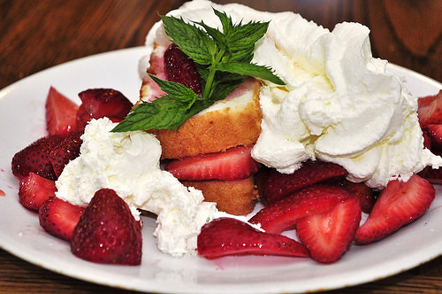

Strawberry Shortcake

Description
Indigrents
Strawberries
- 1 ¼ lb strawberry, cleaned, hulled, and quartere
- 3 tablespoons granulated sugar
- 1 teaspoon lemon zest
- ¼ teaspoon fine sea salt
Shortcake
- 2 cups all purpose flour
- 4 tablespoons granulated sugar, divided
- 1 tablespoon baking powder
- ¾ teaspoon fine sea salt
- 6 tablespoons unsalted butter, cold, cubed
- 1 cup heavy cream, plus 1 1/2 tablespoons, divided
- flaky sea salt, for sprinkling
- whipped cream, for serving
Instructions
Marinate the strawberries: in a medium bowl, combine the strawberries, sugar, lemon zest, and salt. Set aside to marinate while you make the shortcakes.
Preheat the oven to 400°F (200°C).
On a large bowl, whisk together the flour, 3 tablespoons sugar, baking powder, and salt. Add the cubed butter and, using your fingers, cut in the butter until pea-sized pieces form and the mixture starts to clump together. Add 1 cup (240 ml) cream and mix just to combine
Transfer the mixture to a clean work surface and pat into a ¾-inch-thick (2 cm) rectangle. Cut into 8 squares. Use a pastry brush to brush the tops of each square with the remaining 1½ tablespoons of heavy cream and sprinkle with the remaining tablespoon of sugar and flaky salt.
Bake for 20 minutes, until the shortcakes are cooked through and golden on top.
Cool the shortcakes, then split and serve with the marinated strawberries and whipped cream.
Enjoy